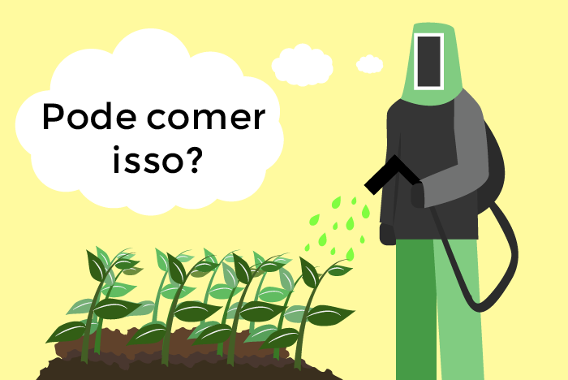

A escolha pelos orgânicos favorece a saúde não apenas daqueles que consomem os alimentos, mas também dos produtores, que não precisam mais entrar em contato com os agrotóxicos.
.png)
Além disso, os agrotóxicos contaminam a água, tanto nos rios como no lençol freático. Essa contaminação é bioacumulativa, ou seja, se acumula ao longo da cadeia alimentar.

Os resíduos tóxicos usados nas plantações convencionais podem provocar diversos sintomas como dermatites, tonturas, desmaios, náuseas, vômitos e alergias, além de serem relacionados por muitos estudos com o desenvolvimento de doenças como cânceres, mal de parkinson e autismo.
.png)
O cultivo convencional prejudica o meio ambiente de diversas formas. As monoculturas, muito comuns na agricultura não orgânica, degradam o solo por cultivarem uma única espécie. Isso acontece pois essa espécie exige do solo os mesmos nutrientes sucessivamente.
.png)
A monocultura também acaba com a biodiversidade. Plantas espontâneas e animais são considerados pragas.
.png)
Na agricultura orgânica, existe um conceito chamado “agrofloresta’”. Nesse sistema, são cultivadas espécies da flora nativa que trazem benefício para o solo e para o agricultor.
.png)
Assim, no cultivo orgânico preza-se a biodiversidade e o equilíbrio dos ecossistemas, que permite que esse tipo de plantação seja menos vulnerável à ação de pragas, já que essas só existem em ecossistemas desequilibrados.
.png)
Além disso, os produtores orgânicos visam minimizar a dependência em fontes de energia não renovável.
.png)
Ao consumir orgânicos na feira, estamos adquirindo produtos de agricultores locais. Dessa forma, o dinheiro que gastamos sustenta as comunidades rurais e não grandes empresários do agronegócio, como acontece com grande parte da produção convencional.
.png)
Um dos objetivos é atrair a juventude rural para o campo, já que os jovens frequentemente sentem necessidade de se mudar para a cidade em busca de melhores oportunidades.
Com os orgânicos, estabelecem-se relações justas de trabalho entre os agricultores, sendo o proprietário da terra responsável pelo bem estar, segurança, informação e capacitação dos demais produtores. Evitam-se, assim, condições inóspitas de trabalho que são observadas em muitos sistemas convencionais de cultivo.
Dessa forma, ao consumir produtos orgânicos, promovemos o desenvolvimento da agricultura local, a integridade das comunidades rurais, o desenvolvimento econômico sustentável e um mundo mais saudável.
PreviousNext